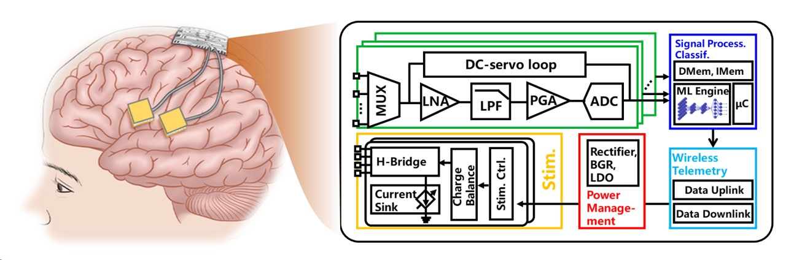

人类与数字世界之间的通讯方式经历了不断的更迭和演进，从打孔卡、键盘、鼠标，到触摸屏，再到借助大语言模型实现的自然语言，通讯效率不断提高。这种通讯的本质是人类大脑或神经系统与数字世界的信息交流。因此，建立大脑和数字世界之间的直接通讯成为21世纪人类最终目标之一。如今，侵入式脑机接口技术在建立这种直接通讯方面取得了重要进展，正在逐步向着这一目标迈进。在脑机接口技术中，芯片扮演着重要的角色，通过将关键电路部分或全部集成在平方毫米级别大小、毫瓦甚至更低功耗的半导体芯片上，摆脱了尺寸、功耗、电缆连接等方面的限制，从而使得侵入式脑机接口系统更容易、更安全、更舒适地进行植入人体。本网页旨在梳理侵入式脑机接口芯片中的主要电路模块设计，希望为对此领域感兴趣的读者提供帮助。
引用本网页
@book{
title={侵入式脑机接口芯片},
author={杨杰，Mohamad Sawan},
note={url{http://yangjie.ac.cn/bci_book}},
year={2024}
}
侵入式脑机接口芯片

Note
如果您发现任何错误，请随时通过电子邮件直接与作者联系：yangjie@westlake.edu.cn。我将会对内容进行持续修改和更新，后续本网站还将上线相关内容的英文版。